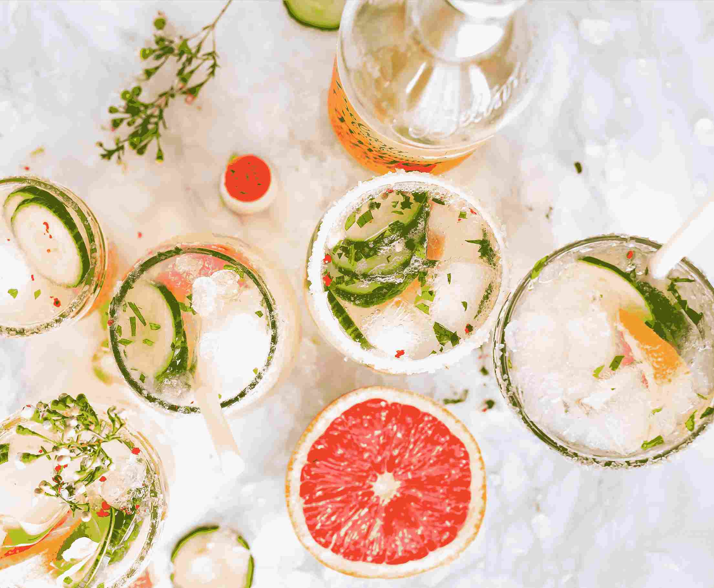
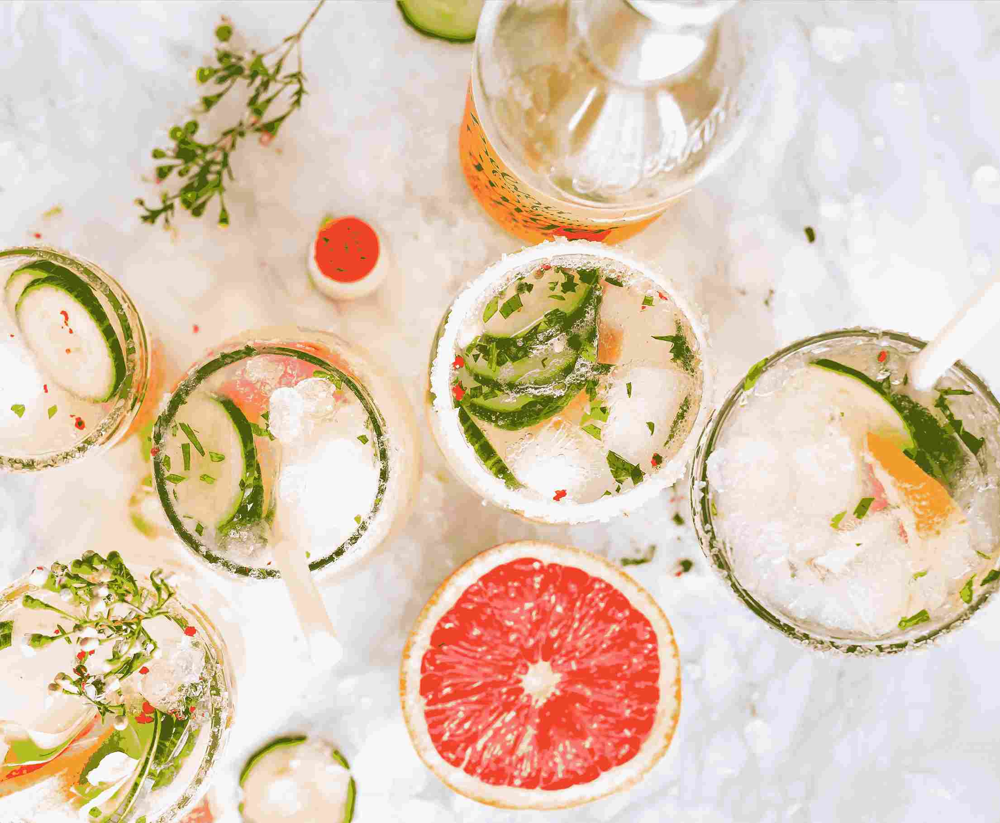

SerialSnoozer
Lord Johan Heimvoss
Founder of SerialSnoozer

Welcome to our blog, a comprehensive guide to all things related to drinks and bartending!
Whether you're a professional bartender looking to refine your skills
or a novice mixologist seeking inspiration for your next cocktail
party, our website has everything you need to know about the art of
mixing drinks. Our team of experienced bartenders and drink
enthusiasts have curated a wide selection of recipes, tips, and tricks
to help you make the perfect drink for any occasion. From classic
cocktails to modern mixology techniques, our website has it all.
In addition to recipes and tips, our website also features articles on
the history and cultural significance of different drinks. We believe
that understanding the origins and traditions behind each drink is
just as important as knowing how to make it. Whether you're interested
in the history of the martini or the cultural significance of tequila
in Mexico, our website has plenty of informative and engaging articles
to satisfy your curiosity. So whether you're a seasoned bartender or
just getting started, we invite you to explore our website and
discover the wonderful world of drinks and bartending!
 
